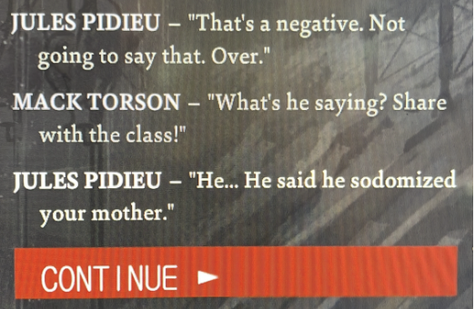
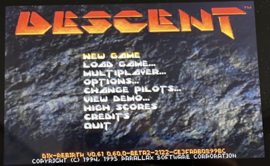
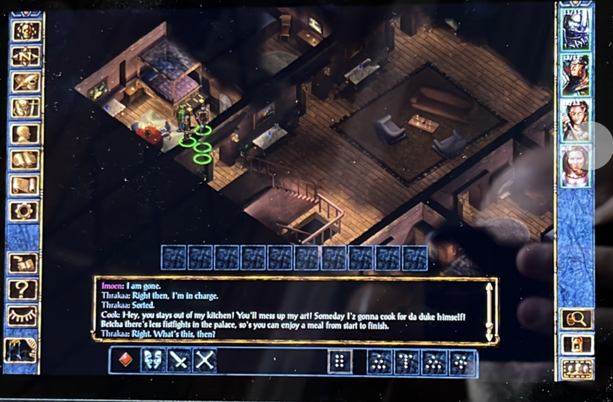
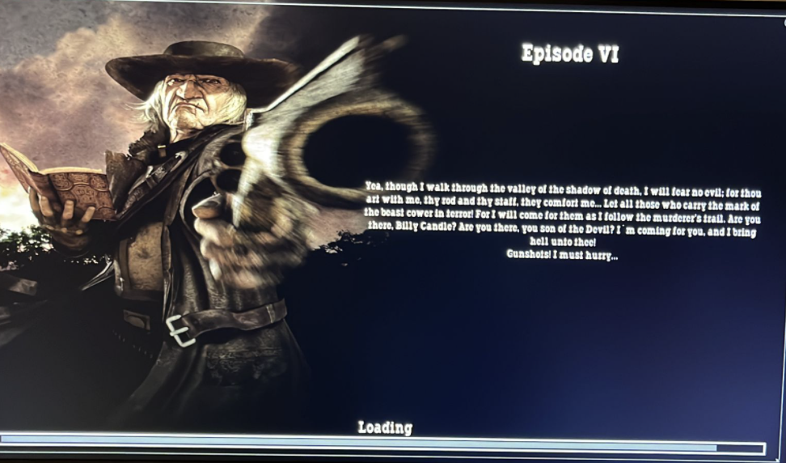
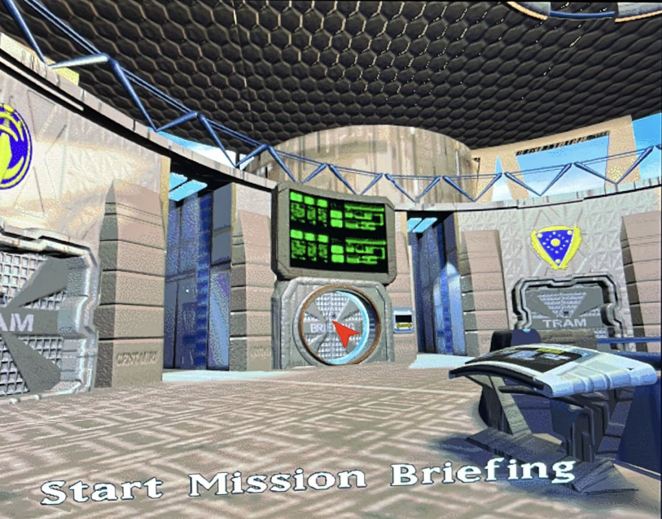
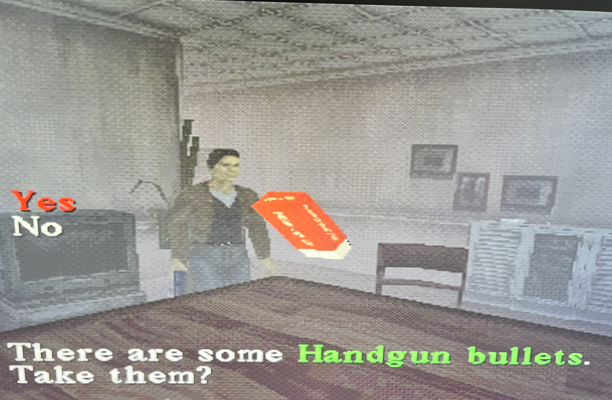

| Cool screenshot | Platform | Scientific Rating | Expert comment |
|---|---|---|---|
|  | Disco Elysium (2019)Wowzers. This is proof positive that I do acknowledge that games made after 2010 exist. Though no doubt this is far older than I think. I'd best look it up, to maintain my journalistic integrity. [Some time passes]. 2019? Pre-Covid? Bloody hellfire.Next time I play it I have to try being a thick but hardcore fascisto bastard. Played in January 2023. Took me just under 20 hours. |
||
|  | Descent (1995)So, my agreement with myself is that if I can tell something isn’t going to be a corker (or at least a relatively short-playtime 3/5!) I can abandon it on the “life’s too short” principle. And lo, Descent clearly falls into the “hasn’t aged well” bucket. Which is what a lot of retro-haters seem to think applies to all games over 5 years’ old. But they are clearly nincompoops. There are an infinite variety of amazing old games. But this ain’t one of them. It’s like Doom with proper 3D movement added, but without interesting level design, weapons, enemies, etc. Every level is basically the same. Plus it’s really aggravatingly difficult! The menu music and intro music are good, though.Played in January 2023. I managed about 2.5 hours before giving up. |
||
|  | Baldur's Gate (1999)Mate, mate. Really enjoyed this one actually. Can’t believe it took me, ooo, a quarter of a century to get around to it. Enhanced Edition makes it nice and simple to get going, and unlike teenage John, this time I actually spent ten minutes learning what THACO means. So, better prepared, I dived in and YEAH it’s a classic high fantasy fun fest for the first half. Drags a bit in the second half but, you know. Easy 4 stars. I will carry on with BG2 later and hopefully complete that too. Finishing a journey that began in Will’s bedroom on George Road.Played in January 2023. Took me around 31 hours. |
||
|  | Call of Juarez (2006)bla bla. |
||
|  | Terra Nova (1996)bla bla. |
||
|  | Silent Hill (1999)bla bla. |